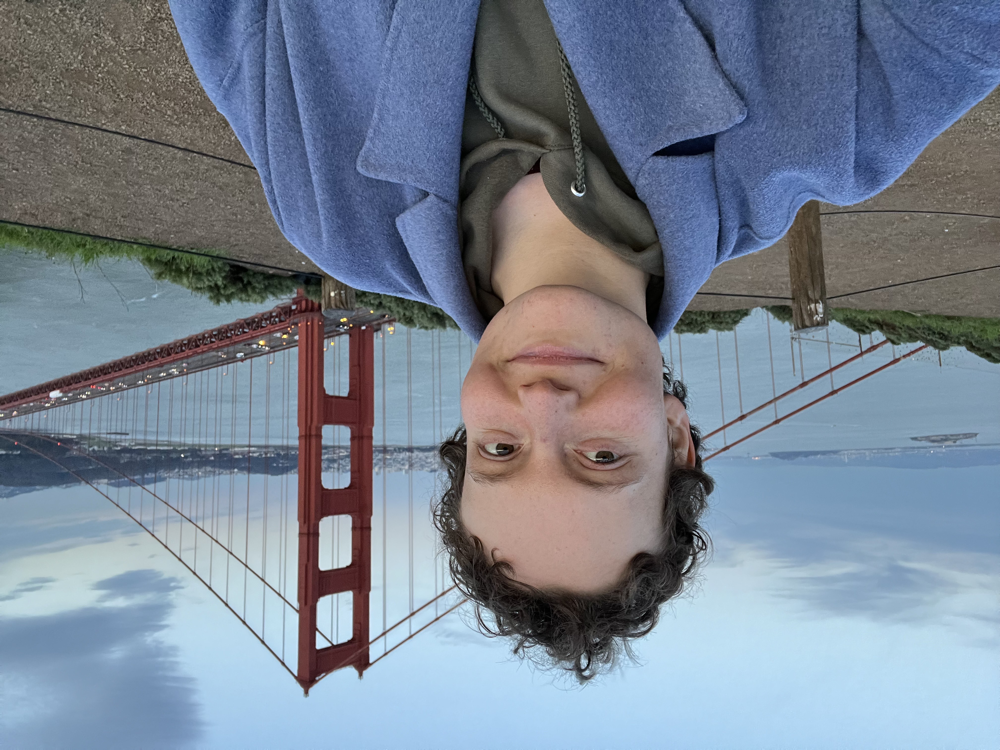
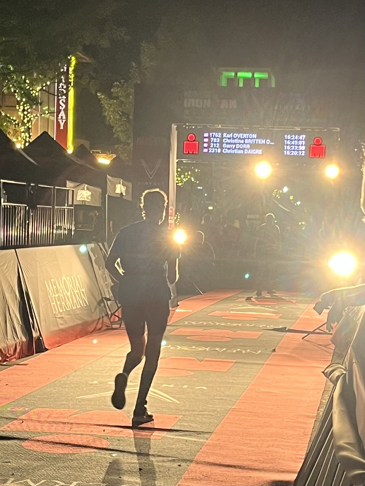
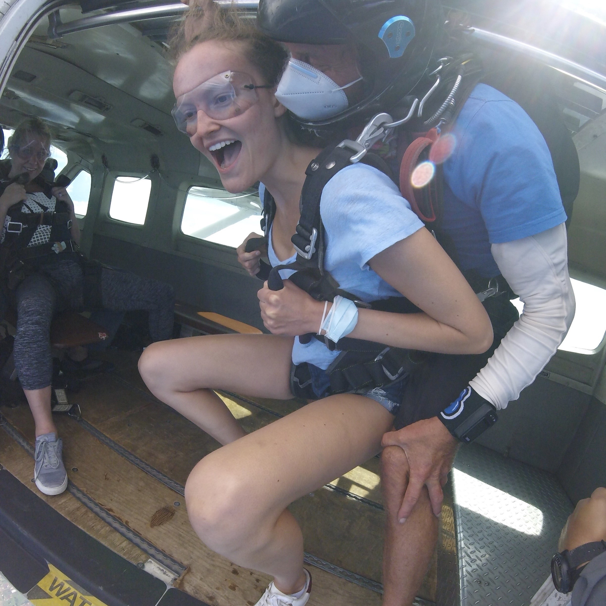
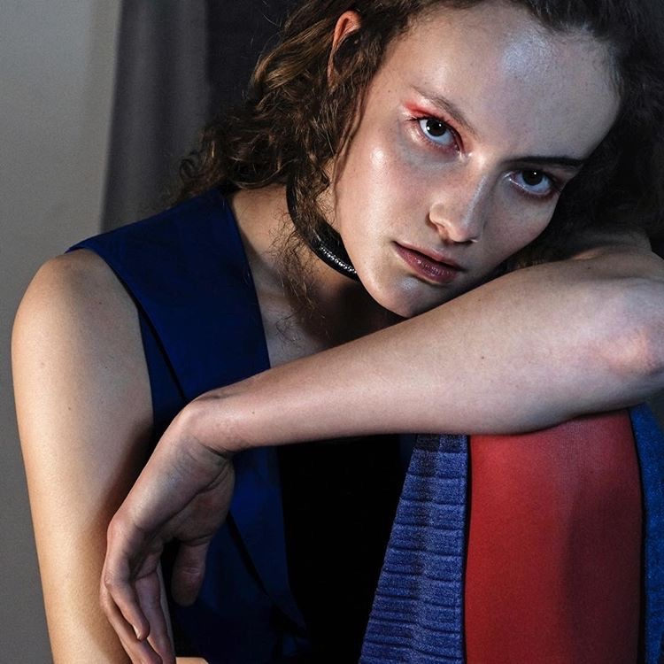
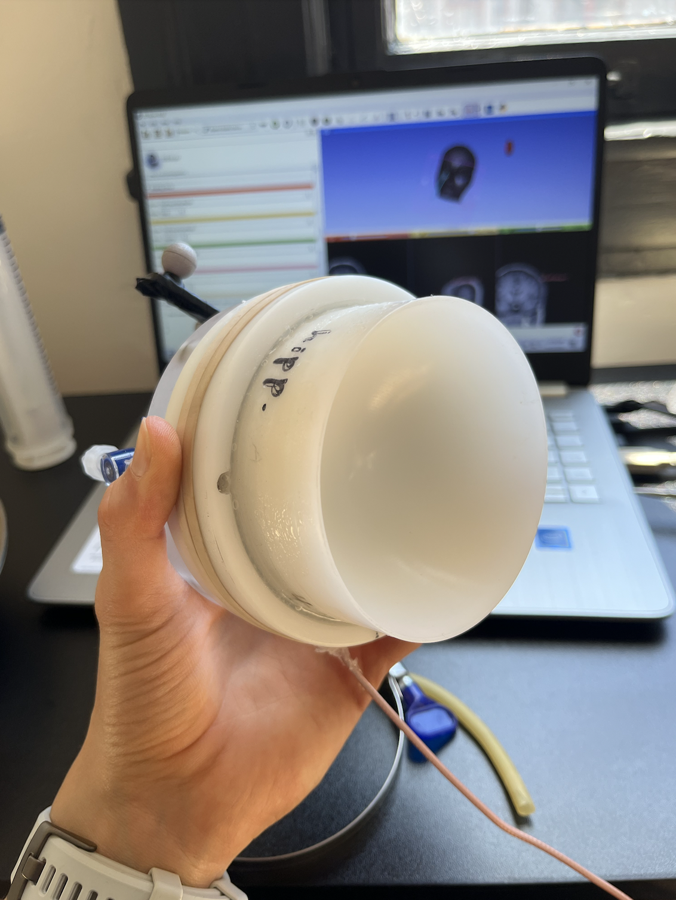
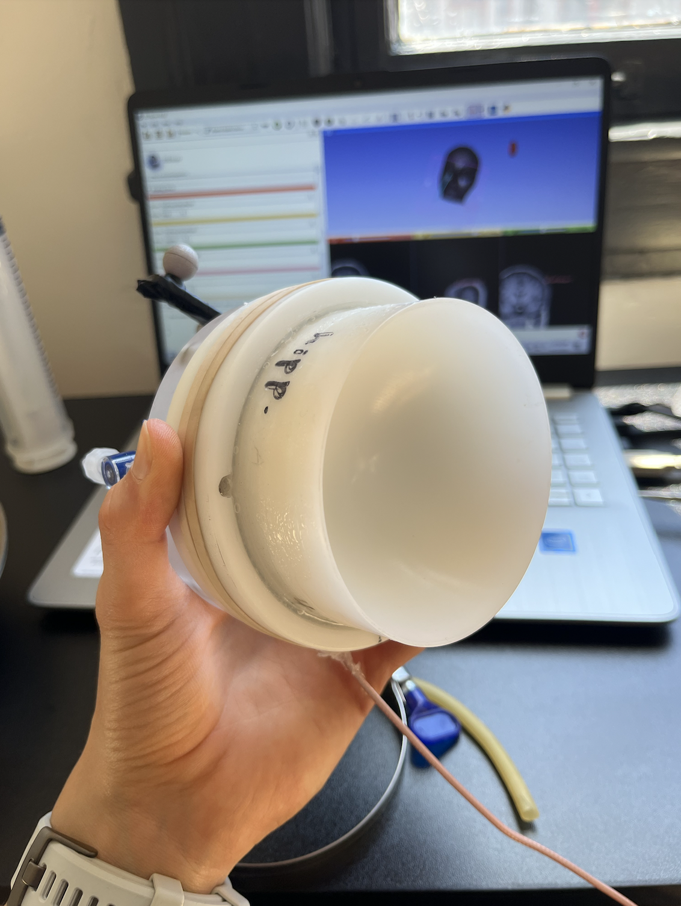

Hi! I make BCIs and do endurance sport.
My long term ambition is to build perfect empathy: a way to literally feel what someone else is feeling.
I am currently 2% of the way there. Here is my roadmap.
I got into endurance sport because doctors told me I wouldn't be able to run (I have a congenital heart
defect). So I decided to show 'em.
In 8 months I went from no endurance ability to earning myself a spot at Ironman World Championships (0.0006% qualification
rate). I will be racing in Kona, Hawaii, on October 14th, 2025.
I now work at Science Corp and previously did BCI research at Founders Fund.
I shaved my head as a social experiment, only listen to hardcore EDM, regularly polar plunge, and in
general pursue the extremes of the human experience.
I speak 5 languages fluently and have lived in 7 countries.
Only dead fish go with the flow.
 
